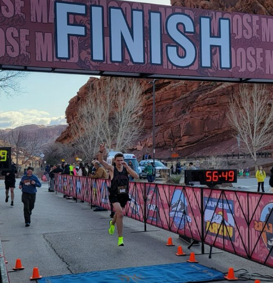

I love to participate in endurance races! I began the journey with my first 5k when I was 9 years old, and now I have competed the national stage in the 5k distance. (Click here for my high school times via Athletic.net) Following my scholastic carreer, I shifted to the longer endurance races, including half marathons, full marathons and triathalons. Here are some of the races I have competed in:
I also have a few races planed for the future, including the following: